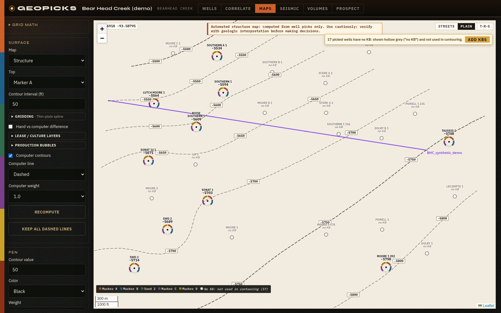
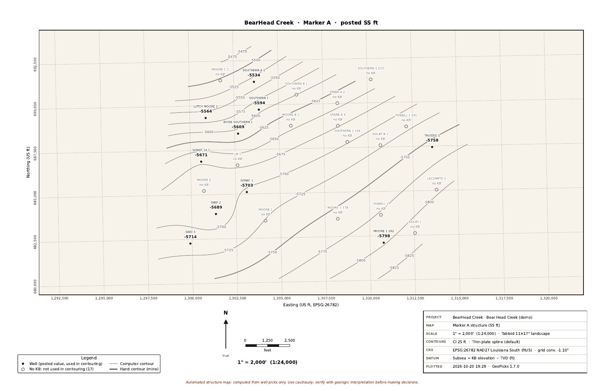
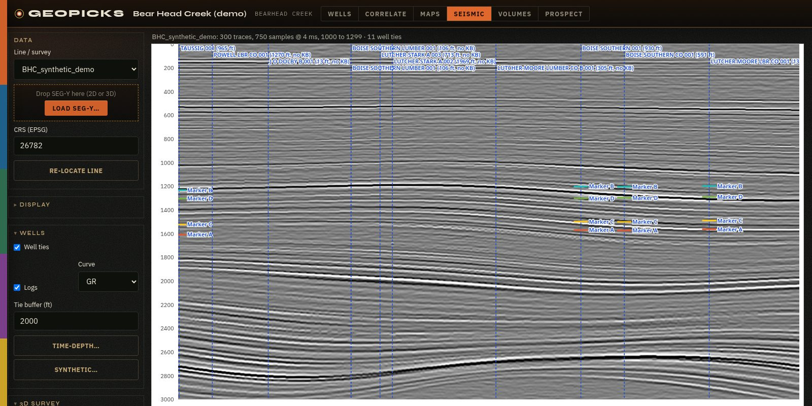
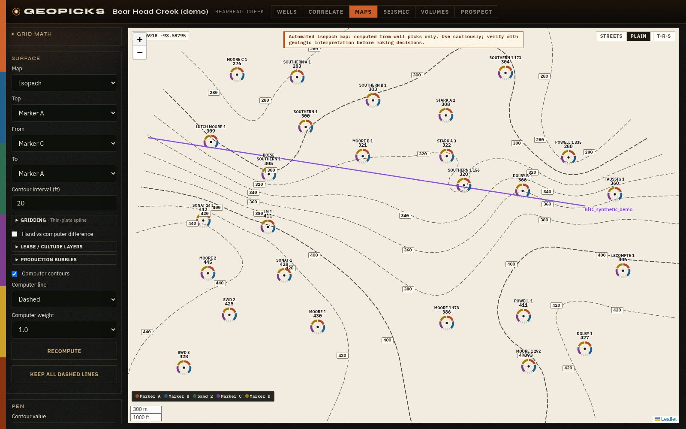
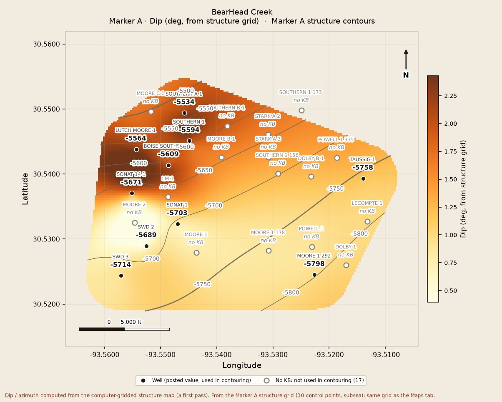

Map prospects from scanned logs and seismic, on your own machine.
GeoPicks is a native Mac and Windows app for subsurface mapping. Pick tops on scanned well logs, correlate across sections, tie your wells to 2D and 3D seismic, and build structure maps, isopachs, volumetrics and seismic attribute maps from both well control and seismic horizons. Affordable for independents and consultants, with no LAS files required and no cloud upload.
Get free beta access
Raster-native logs
Pick directly on scanned PDF well logs. There's no digitizing and no LAS files needed before you can map.
Pick and correlate
Hang wells on a datum, pick tops across cross sections, and catch bad picks with QC checks.
2D and 3D seismic
Load 2D lines and 3D SEG-Y volumes. View inlines, crosslines, time slices, and arbitrary lines through your wells.
Wells tied to seismic
See your well tops posted on the seismic at their two-way times. Enter a checkshot, or build a synthetic seismogram from sonic and density logs and use it as the well's time-depth.
Horizons that feed your maps
Pick and auto-track horizons on 2D and 3D seismic. They're depth-converted and used alongside your well picks as structure-map control.
Maps from your picks
GeoPicks computes structure and isopach contours from your picks and labels them as automated, so you treat them as a starting point and check them against your own interpretation.
Exports you can use
ZMap grids, shapefiles, a PowerPoint deck, and a PDF prospect pack.
Yours, offline
A native app on your own Mac or Windows PC. Your project data stays on your machine (privacy). The Bear Head Creek demo field, 27 wells with tops already picked, opens on first launch so you can try it right away.
New in 1.7
More out of your seismic, and depths you can trace back to your wells.
Seismic attributes
Envelope, instantaneous phase and frequency, cosine of phase, and sweetness on 2D lines and 3D sections. 3D attribute volumes are computed once and cached for time slices.
Horizon amplitude maps
Amplitude at a horizon, RMS, mean absolute, maximum, minimum, or sum of positive amplitudes, in a window around one horizon or between two. Export PNG, ZMap or CSV, or add the map to the prospect pack.
Dip and azimuth maps
Dip and down-dip azimuth computed from your structure grid, from wells, seismic or both.
Velocity model from your ties
A layered model fitted to your well ties, constant velocity or V0 + kZ per layer. Check the residuals in a table and on a map, then view depth sections. Depths are labeled as estimates.
Fully offline display
Fonts and the map library now ship with the app. Besides the daily update check, only the optional street basemap, USGS elevation lookup and township/range grid use the network (details).
New in 1.6
From picks to a prospect you can defend: volumes, better grids, plotted sheets, and the cleanup work that used to happen in a spreadsheet.
Volumetrics
Find the closure and spill point on your structure map, honor sealing faults, or set your own contact. GRV, OOIP/OGIP and recoverable, always labeled as estimates from your inputs.
Grids that honor your contours
Draw your own contours and the grid re-fits to them, with every well still honored exactly. Turn on the difference view to see where your contours and the computer's disagree.
Gridding methods
Thin-plate spline, minimum curvature, kriging, or IDW, with cell size, buffer and smoothing set per map.
Plot to scale
1" = N ft on letter up to 24x36, with a title block, scale bar, north arrow and State Plane grid. Ready for the plotter.
Seismic well-tie corrections
Seismic horizons are corrected to your well tops, with a mis-tie table that flags wells over your tolerance.
Bulk KB editor
Edit KBs in one table or import a CSV. Wells with no KB are flagged instead of quietly dropped, and left out of the contouring until you add one.
Production bubble maps
Import monthly production from CSV and post cumulative or rate bubbles for oil, gas, water or BOE on your maps and exports.
Lease and culture layers
Drop in shapefiles, GeoJSON or KML/KMZ for leases, roads and pipelines. Styled, labeled and carried onto PDFs and plots.
Updates itself 1.6.3
Starting with 1.6.3, GeoPicks tells you when a new version is out. Click Update now and it downloads, verifies and installs the update, then reopens. Your projects and license stay put.
Screens from the demo
Real captures from GeoPicks 1.6.3 and 1.7 running the Bear Head Creek demo exactly as it ships with the app.










Computer-gridded maps, volumes and depth conversions are a starting point. GeoPicks labels them as automated estimates; check them against your own geologic interpretation before making decisions.
Built by a geologist, for independents
Since finishing my PhD at Tulane, I've wanted to prospect independently, but traditional subsurface mapping software costs thousands of dollars a year in licensing. So I built GeoPicks for geologists, independents, and consultants who map from well logs and seismic. It reads data from SONRIS, the Texas RRC, IHS/Enverus, Petra and Kingdom exports. It also loads 2D and 3D SEG-Y, ties your wells to the seismic, and lets you pick horizons that feed your structure maps.
J. Kevin Reece, PhD
Join the beta
Beta testers get 3 months free, plus 3 more after a short feedback form (6 months total). It runs on Mac and Windows. Each beta key works on one computer.
Thanks, you're in.
Download GeoPicks for your computer:
- Mac: open the .dmg and drag GeoPicks into Applications. The first time, right-click GeoPicks and choose Open. On macOS Sequoia, if it won't open, go to System Settings > Privacy & Security and click Open Anyway.
- Windows: run the installer. If SmartScreen appears, click More info, then Run anyway.
The beta isn't code-signed yet, which is why you'll see those warnings. Full install notes are on the download page.
You only install once. From 1.6.3 on, GeoPicks offers new versions itself: click Update now in the app. On a Mac, keep GeoPicks in your Applications folder so it can update in place.
GeoPicks needs a license key to run. I sign each key myself, and each beta key works on one computer. To get yours:
- Install GeoPicks with the download above.
- Open GeoPicks. It opens on the Activate screen.
- Click Copy next to your Machine ID (it looks like
GPM-XXXX-XXXX-XXXX). - Reply to my beta key email with it, or email it to geopicks.software@gmail.com.
You already sent a Machine ID (), so your free 3-month beta key will be issued for that computer and will come by email from me within 1 business day. If you install on a different computer, send me that computer's Machine ID instead.
Your free 3-month beta key will come by email from me within 1 business day of getting your Machine ID.
Questions or feedback: geopicks.software@gmail.com